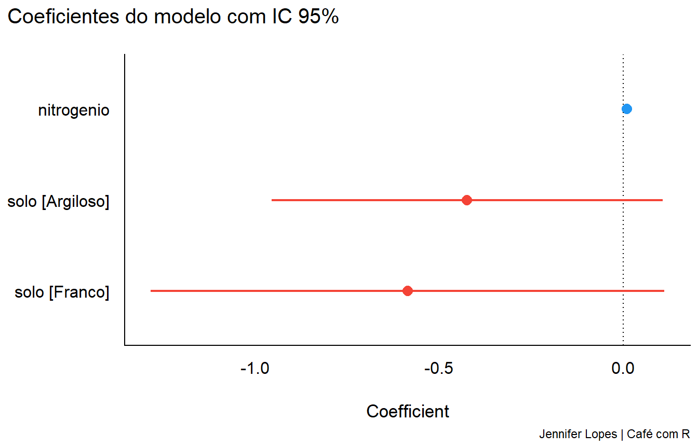
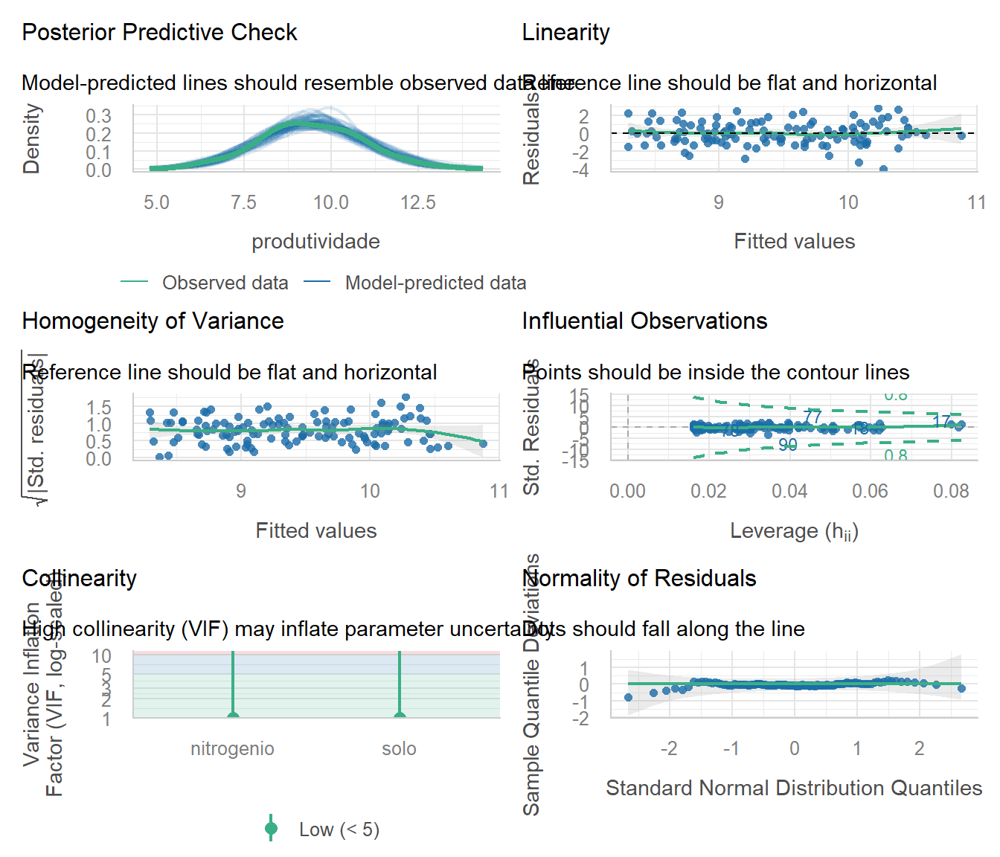
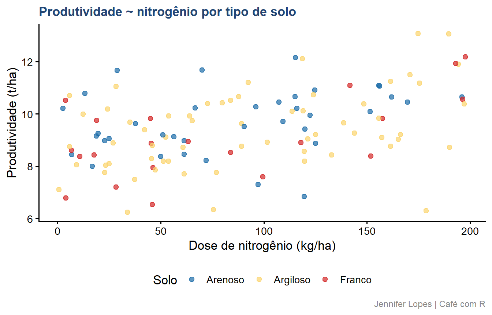
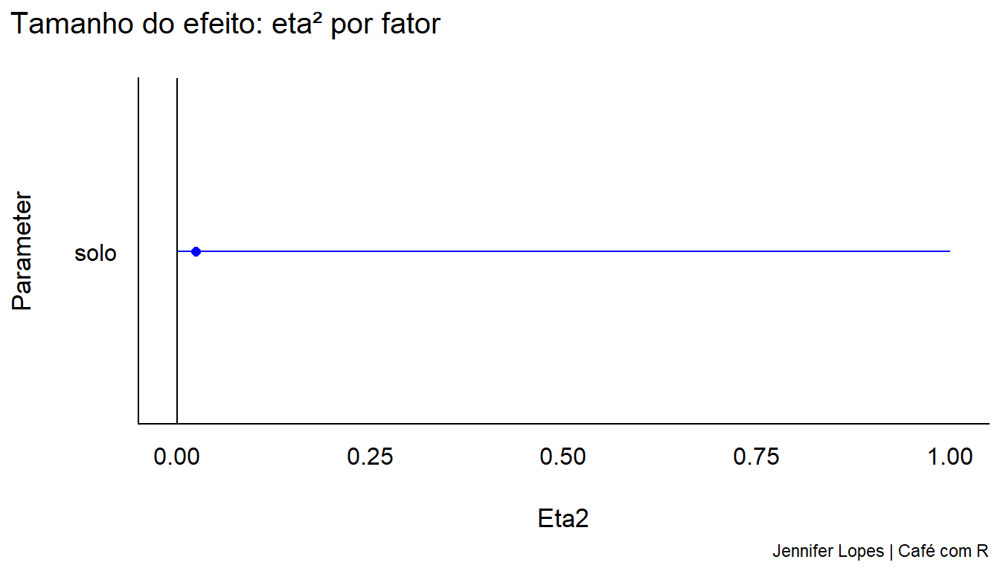
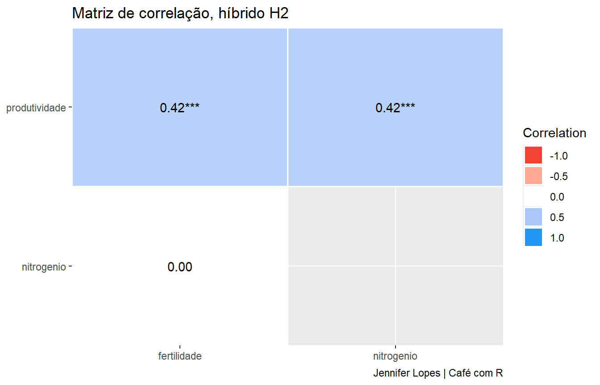
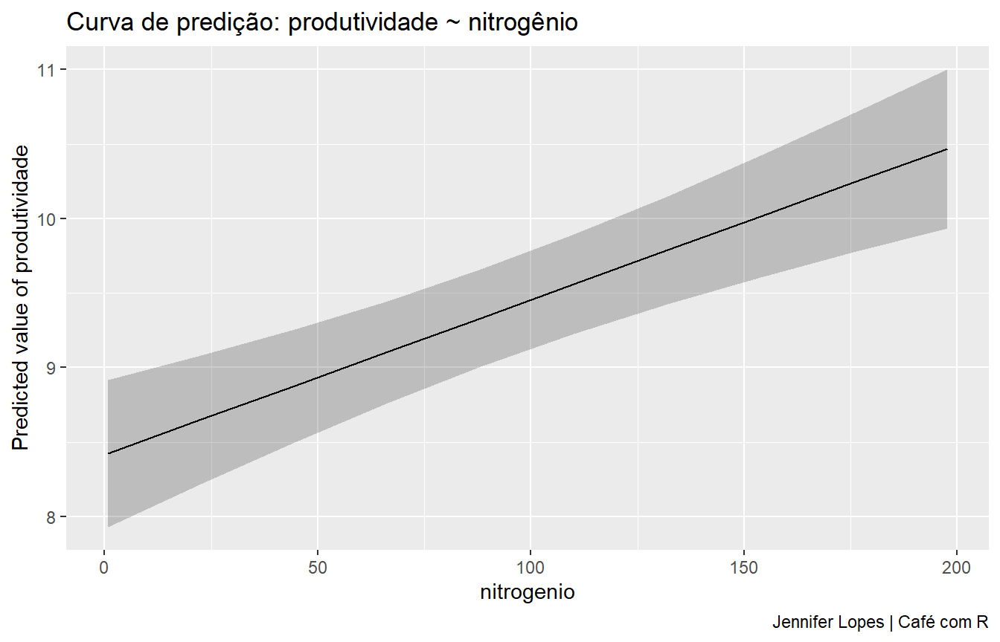
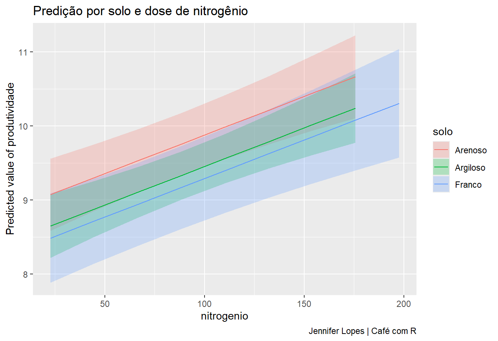

Code
# install.packages("easystats")
#install.packages("marginaleffects")
library(easystats)
library(marginaleffects)parameters, performance, see, effectsize, correlation, report, modelbased e bayestestR
Esta aula apresenta o ecossistema easystats, um conjunto de oito pacotes do R projetados para trabalhar de forma integrada na análise e comunicação de modelos estatísticos. Os dados são os mesmos das aulas anteriores: híbrido H2, dose de nitrogênio e tipo de solo.

Que cada gole desperte uma nova ideia.
Que cada script abra uma nova conversa.
Que o Café com R se torne um ponto de encontro nosso.
SITE OFICIAL > https://jenniferlopes.github.io/meu_site/
parametersperformanceseeeffectsizecorrelationreportmodelbasedbayestestRO easystats é um ecossistema de pacotes do R desenvolvido para tornar a análise estatística mais acessível, consistente e comunicável. Ele não substitui o tidyverse nem os pacotes de modelagem, ele complementa, organizando o que vem depois do ajuste do modelo.

Após ajustar um modelo com lm(), glm() ou lmer(), o R retorna um objeto com estrutura complexa.
Extrair coeficientes, calcular intervalos de confiança, verificar pressupostos, comparar modelos e comunicar resultados exige conhecimento de múltiplas funções e pacotes distintos, com sintaxes inconsistentes entre si.
O easystats unifica esse processo em uma interface coerente.
# install.packages("easystats")
#install.packages("marginaleffects")
library(easystats)
library(marginaleffects)easystats, os oito pacotes são carregados automaticamente: parameters, performance, see, effectsize, correlation, report, modelbased e bayestestR.| Pacote | Função principal |
|---|---|
parameters |
Extrai e formata coeficientes de modelos |
performance |
Avalia qualidade do ajuste e verifica pressupostos |
see |
Visualizações integradas, ativado automaticamente |
effectsize |
Calcula tamanho do efeito padronizado |
correlation |
Análise de correlação com múltiplos métodos |
report |
Gera texto científico automático a partir do modelo |
modelbased |
Predições, médias marginais e contrastes |
bayestestR |
Inferência bayesiana acessível |
O ecossistema foi projetado para que os pacotes trabalhem em sequência natural:
Ajustar o modelo
|
v
parameters → extrair coeficientes
|
v
performance → avaliar qualidade e pressupostos
|
v
effectsize → quantificar a magnitude do efeito
|
v
modelbased → estimar predições e médias ajustadas
|
v
report → comunicar em linguagem científicaO
seeopera em segundo plano, fornecendo as visualizações para todos os outros pacotes quandoplot()é chamado sobre seus objetos.
parametersSubstitui summary() com uma interface tidy, consistente e visualmente clara
O pacote parameters resolve um problema específico: o summary() do R retorna os coeficientes de um modelo, mas em um formato difícil de manipular, comparar ou incluir em relatórios.
O que parameters oferece:
see para visualizaçãoAtenção: parameters não ajusta modelos, ele extrai e organiza o que já foi ajustado. O modelo precisa ser criado primeiro com lm(), glm(), lmer() ou equivalente.
model_parameters()A função model_parameters() é o núcleo do pacote. Ela aceita qualquer objeto de modelo e retorna uma tabela estruturada com os coeficientes e suas métricas associadas.
Argumentos principais:
| Argumento | Função | Padrão |
|---|---|---|
model |
O objeto de modelo ajustado | obrigatório |
ci |
Nível de confiança para o IC | 0.95 |
standardize |
Padronizar os coeficientes? | NULL |
effects |
Fixos, aleatórios ou ambos | "fixed" |
exponentiate |
Exponenciar coeficientes (GLM)? | FALSE |
p_adjust |
Correção para múltiplos testes | NULL |
model_parameters(m2, ci = 0.95)Parameter | Coefficient | SE | 95% CI | t(116) | p
--------------------------------------------------------------------------
(Intercept) | 8.84 | 0.27 | [ 8.30, 9.38] | 32.31 | < .001
nitrogenio | 0.01 | 2.04e-03 | [ 0.01, 0.01] | 5.10 | < .001
solo [Argiloso] | -0.42 | 0.27 | [-0.96, 0.11] | -1.58 | 0.117
solo [Franco] | -0.59 | 0.35 | [-1.28, 0.11] | -1.66 | 0.099 Como ler a tabela:
Coefficient: estimativa pontual do parâmetro \(\hat{\beta}\)CI_low / CI_high: limites inferior e superior do IC 95%t: estatística t do teste \(H_0: \beta = 0\)df_error: graus de liberdade do errop: p-valor do testeQuando as variáveis explicativas estão em escalas diferentes, dose de nitrogênio em kg/ha e uma variável categórica, por exemplo, os coeficientes brutos não são diretamente comparáveis em magnitude.
A padronização transforma cada coeficiente para a escala do desvio padrão, permitindo comparar a contribuição relativa de cada variável.
Método "refit": reajusta o modelo com todas as variáveis numéricas padronizadas antes da estimação. É o método mais preciso.
Método "basic": divide o coeficiente pelo desvio padrão da variável. Mais rápido, menos preciso.
model_parameters(m2, ci = 0.95, standardize = "refit")Parameter | Coefficient | SE | 95% CI | t(116) | p
----------------------------------------------------------------------
(Intercept) | 0.23 | 0.15 | [-0.07, 0.52] | 1.51 | 0.132
nitrogenio | 0.42 | 0.08 | [ 0.26, 0.59] | 5.10 | < .001
solo [Argiloso] | -0.30 | 0.19 | [-0.67, 0.08] | -1.58 | 0.117
solo [Franco] | -0.41 | 0.25 | [-0.90, 0.08] | -1.66 | 0.099 Os coeficientes padronizados permitem comparar diretamente a magnitude do efeito de nitrogenio com o efeito de solo, algo impossível com os coeficientes na escala original.
model_parameters(m2, ci = 0.95) |>
plot() +
labs(
title = "Coeficientes do modelo com IC 95%",
caption = "Jennifer Lopes | Café com R")
O gráfico de coeficientes é preferível à tabela quando o objetivo é comunicar visualmente quais efeitos são detectáveis e qual a precisão das estimativas. Coeficientes cujo IC atravessa zero não são distinguíveis de zero ao nível de confiança adotado.
compare_parameters() permite comparar os coeficientes de dois ou mais modelos lado a lado, útil para avaliar como os efeitos mudam com a adição de variáveis.
compare_parameters(m1, m2, m3)Parameter | m1 | m2 | m3
-----------------------------------------------------------------------------------------------
(Intercept) | 8.52 (8.10, 8.95) | 8.84 ( 8.30, 9.38) | 9.10 ( 8.29, 9.90)
nitrogenio | 0.01 (0.01, 0.01) | 0.01 ( 0.01, 0.01) | 7.33e-03 ( 0.00, 0.02)
solo [Argiloso] | | -0.42 (-0.96, 0.11) | -0.67 (-1.69, 0.34)
solo [Franco] | | -0.59 (-1.28, 0.11) | -1.12 (-2.31, 0.06)
nitrogenio × solo [Argiloso] | | | 2.96e-03 (-0.01, 0.01)
nitrogenio × solo [Franco] | | | 6.57e-03 (-0.01, 0.02)
-----------------------------------------------------------------------------------------------
Observations | 120 | 120 | 120performanceSubstitui a inspeção manual de resíduos com um painel diagnóstico automático e padronizado
O pacote performance centraliza a avaliação de modelos estatísticos. Ele responde duas perguntas fundamentais que todo modelo precisa responder antes de ser usado para inferência:
1. O modelo ajusta bem os dados? Métricas como \(R^2\), AIC, BIC, RMSE e erro padrão residual quantificam a qualidade do ajuste.
2. Os pressupostos do modelo são atendidos? Normalidade dos resíduos, homocedasticidade, ausência de multicolinearidade e pontos influentes precisam ser verificados antes de interpretar qualquer coeficiente.
Atenção: um modelo com boas métricas de ajuste pode ainda ter pressupostos violados. As duas verificações são independentes e igualmente necessárias.
model_performance() retorna as principais métricas de qualidade do ajuste em uma única tabela.
Métricas retornadas para modelos lineares:
| Métrica | O que mede |
|---|---|
| \(R^2\) | Proporção da variância de \(Y\) explicada pelo modelo |
| \(R^2\) ajustado | \(R^2\) penalizado pelo número de parâmetros |
| AIC | Critério de informação de Akaike, penaliza complexidade |
| BIC | Critério bayesiano de informação, penalidade maior que AIC |
| RMSE | Raiz do erro quadrático médio, na escala de \(Y\) |
| Sigma | Estimativa do desvio padrão dos resíduos |
model_performance(m2)# Indices of model performance
AIC | AICc | BIC | R2 | R2 (adj.) | RMSE | Sigma
---------------------------------------------------------
407.6 | 408.1 | 421.5 | 0.202 | 0.182 | 1.268 | 1.290compare_performance() aplica model_performance() a múltiplos modelos e retorna uma tabela comparativa. O argumento rank = TRUE adiciona uma coluna de ranqueamento baseada em múltiplos critérios combinados.
compare_performance(m1, m2, m3, rank = TRUE)# Comparison of Model Performance Indices
Name | Model | R2 | R2 (adj.) | RMSE | Sigma | AIC weights | AICc weights
-----------------------------------------------------------------------------
m2 | lm | 0.202 | 0.182 | 1.268 | 1.290 | 0.406 | 0.383
m3 | lm | 0.211 | 0.176 | 1.261 | 1.294 | 0.106 | 0.079
m1 | lm | 0.178 | 0.171 | 1.288 | 1.299 | 0.488 | 0.539
Name | BIC weights | Performance-Score
--------------------------------------
m2 | 0.049 | 71.06%
m3 | 7.83e-04 | 43.17%
m1 | 0.950 | 42.86%O modelo com menor AIC e BIC e maior \(R^2\) ajustado é o preferido pelo critério de parcimônia. O ranqueamento combina esses critérios automaticamente.
check_model() é a função mais poderosa do pacote. Ela gera um painel com seis gráficos diagnósticos que verificam simultaneamente os pressupostos do modelo linear:
| Gráfico | Pressuposto verificado |
|---|---|
| Resíduos vs. ajustados | Linearidade e homocedasticidade |
| QQ-plot dos resíduos | Normalidade dos erros |
| Scale-location | Homocedasticidade |
| Cook’s distance | Pontos influentes |
| VIF | Multicolinearidade |
| Resíduos vs. leverage | Pontos alavancados |
check_model(m2)
Resíduos vs. ajustados: a linha de referência deve ser aproximadamente horizontal e os pontos distribuídos sem padrão sistemático. Curvatura indica não linearidade.
QQ-plot: os pontos devem seguir a linha diagonal. Desvios nas caudas indicam afastamento da normalidade.
Scale-location: a linha deve ser horizontal. Tendência crescente indica heterocedasticidade, variância dos erros aumenta com os valores ajustados.
Cook’s distance: valores acima de 1 indicam pontos com influência excessiva sobre os coeficientes estimados.
VIF: valores acima de 5 indicam multicolinearidade moderada; acima de 10, severa.
check_normality(m2)
check_heteroscedasticity(m2)
check_collinearity(m2)
check_outliers(m2)OK: residuals appear as normally distributed (p = 0.427).OK: Error variance appears to be homoscedastic (p = 0.355).# Check for Multicollinearity
Low Correlation
Term VIF VIF 95% CI adj. VIF Tolerance Tolerance 95% CI
nitrogenio 1.01 [1.00, 1.71e+07] 1.00 0.99 [0.00, 1.00]
solo 1.01 [1.00, 1.71e+07] 1.00 0.99 [0.00, 1.00]OK: No outliers detected.
- Based on the following method and threshold: cook (0.7).
- For variable: (Whole model)Cada função retorna uma mensagem estruturada indicando se o pressuposto foi atendido, com referência ao teste utilizado e ao nível de significância adotado.
seeNão é chamado diretamente, é ativado automaticamente quando plot() é aplicado sobre objetos do easystats
O pacote see é o sistema de visualização do ecossistema easystats. Ele não é chamado diretamente pelo analista, ele opera em segundo plano, redefinindo o método plot() para os objetos gerados pelos outros pacotes.
O que isso significa na prática:
Quando você executa plot(model_parameters(m2)), o R chama automaticamente o método plot do see, que sabe como transformar aquele objeto específico em um gráfico adequado.
O mesmo acontece com plot(model_performance()), plot(check_model()), plot(correlation()) e todos os outros objetos do ecossistema.
Atenção: see precisa estar carregado para que os métodos plot() funcionem. Ao carregar library(easystats), o see é carregado automaticamente. Se você carregar apenas library(parameters), por exemplo, o plot() pode não funcionar como esperado.
O see também oferece paletas de cores projetadas para visualizações estatísticas, acessíveis via scale_color_see() e scale_fill_see() no ggplot2.
amostra |>
ggplot(aes(x = nitrogenio, y = produtividade,
color = solo)) +
geom_point(alpha = 0.7, size = 2) +
scale_color_see() +
labs(
title = "Produtividade ~ nitrogênio por tipo de solo",
x = "Dose de nitrogênio (kg/ha)",
y = "Produtividade (t/ha)",
color = "Solo",
caption = "Jennifer Lopes | Café com R") +
tema
effectsizeComplementa o p-valor com a magnitude prática do efeito observado
O tamanho do efeito quantifica a magnitude de uma diferença ou associação, independentemente do tamanho da amostra. Ele responde à pergunta que o p-valor não responde: o efeito detectado é grande o suficiente para ter relevância prática?
Com amostras grandes, diferenças triviais produzem p-valores muito pequenos. Com amostras pequenas, efeitos relevantes podem não atingir significância estatística. O tamanho do efeito é a medida que desacopla essas duas informações.
O pacote effectsize calcula os principais índices padronizados usados em ciências aplicadas:
| Índice | Contexto de uso |
|---|---|
| Cohen’s d | Diferença entre duas médias |
| \(\eta^2\) (eta²) | Proporção da variância explicada, ANOVA |
| \(\omega^2\) (omega²) | Versão menos viesada do \(\eta^2\) |
| \(r\) de correlação | Associação entre duas variáveis contínuas |
| Odds Ratio | Modelos logísticos, variável binária |
O Cohen’s d mede a diferença entre duas médias em unidades de desvio padrão:
\[d = \frac{\bar{x}_1 - \bar{x}_2}{s_{pooled}}\]
Convenções de interpretação (Cohen, 1988):
| Valor de \(|d|\) | Magnitude |
|---|---|
| \(0{,}20\) | Pequeno |
| \(0{,}50\) | Médio |
| \(0{,}80\) | Grande |
Atenção: as convenções de Cohen são referências gerais, não regras absolutas. Um efeito “pequeno” pode ser relevante em determinados contextos agronômicos, por exemplo, um ganho de 0,2 t/ha por ciclo em larga escala comercial. A relevância prática é uma decisão substantiva, não estatística.
amostra_solos <- amostra |>
filter(solo %in% c("Argiloso", "Arenoso"))
cohens_d(produtividade ~ solo, data = amostra_solos)Cohen's d | 95% CI
-------------------------
0.24 | [-0.17, 0.65]
- Estimated using pooled SD.Para modelos com mais de dois grupos ou com múltiplas variáveis explicativas, o eta² e o omega² quantificam a proporção da variância total de \(Y\) explicada por cada fator.
Diferença entre os dois:
\(\eta^2\): estimativa direta da proporção de variância explicada na amostra. Levemente viesado para cima.
\(\omega^2\): versão corrigida, com estimativa menos viesada da magnitude do efeito na população. Preferível para reportar.
Convenções:
| Valor | Magnitude |
|---|---|
| \(0{,}01\) | Pequeno |
| \(0{,}06\) | Médio |
| \(0{,}14\) | Grande |
modelo_anova <- lm(produtividade ~ solo, data = amostra)
eta_squared(modelo_anova, partial = FALSE)
omega_squared(modelo_anova, partial = FALSE)# Effect Size for ANOVA (Type I)
Parameter | Eta2 | 95% CI
-------------------------------
solo | 0.02 | [0.00, 1.00]
- One-sided CIs: upper bound fixed at [1.00].# Effect Size for ANOVA (Type I)
Parameter | Omega2 | 95% CI
-----------------------------------
solo | 7.11e-03 | [0.00, 1.00]
- One-sided CIs: upper bound fixed at [1.00].eta_squared(modelo_anova, partial = FALSE) |>
plot() +
labs(
title = "Tamanho do efeito: eta² por fator",
caption = "Jennifer Lopes | Café com R")
correlationVai além do cor(), suporta correlação parcial, policórica, de Kendall, Spearman e mais
A função cor() do R calcula correlações, mas retorna apenas uma matriz numérica sem métricas de incerteza, sem p-valores e sem suporte a métodos alternativos de forma integrada.
O pacote correlation resolve isso com uma interface unificada que:
see para visualização automática da matriz de correlaçãogroup_by() do tidyverse para correlações por grupo| Método | Quando usar |
|---|---|
"pearson" |
Variáveis contínuas com relação linear |
"spearman" |
Variáveis ordinais ou relação monotônica não linear |
"kendall" |
Amostras pequenas ou com muitos empates |
"partial" |
Correlação controlada por terceiras variáveis |
"semi" |
Correlação semi-parcial, controla apenas uma das variáveis |
"polychoric" |
Variáveis ordinais, estima correlação latente |
"tetrachoric" |
Variáveis binárias, estima correlação latente |
amostra |>
select(produtividade, nitrogenio, fertilidade) |>
correlation(method = "pearson")# Correlation Matrix (pearson-method)
Parameter1 | Parameter2 | r | 95% CI | t(118) | p
----------------------------------------------------------------------------
produtividade | nitrogenio | 0.42 | [ 0.26, 0.56] | 5.05 | < .001***
produtividade | fertilidade | 0.42 | [ 0.26, 0.56] | 4.99 | < .001***
nitrogenio | fertilidade | -1.42e-03 | [-0.18, 0.18] | -0.02 | 0.988
p-value adjustment method: Holm (1979)
Observations: 120Como ler: cada linha representa um par de variáveis. r é o coeficiente de Pearson, CI_low e CI_high são os limites do IC 95%, t é a estatística do teste \(H_0: \rho = 0\) e p é o p-valor correspondente.
amostra |>
select(produtividade, nitrogenio, solo) |>
group_by(solo) |>
correlation(method = "pearson")# Correlation Matrix (pearson-method)
Group | Parameter1 | Parameter2 | r | 95% CI | t | df | p
----------------------------------------------------------------------------------
Arenoso | produtividade | nitrogenio | 0.32 | [ 0.00, 0.58] | 2.00 | 35 | 0.053
Argiloso | produtividade | nitrogenio | 0.40 | [ 0.17, 0.59] | 3.39 | 60 | 0.001**
Franco | produtividade | nitrogenio | 0.61 | [ 0.25, 0.83] | 3.38 | 19 | 0.003**
p-value adjustment method: Holm (1979)
Observations: 21-62amostra |>
select(produtividade, nitrogenio, fertilidade) |>
correlation() |>
summary() |>
plot() +
labs(
title = "Matriz de correlação, híbrido H2",
caption = "Jennifer Lopes | Café com R")
reportTraduz objetos estatísticos em texto pronto para relatório, com as ressalvas que isso exige
O pacote report gera automaticamente um parágrafo descrevendo os resultados de um modelo ou teste estatístico, seguindo as convenções de redação científica da área de psicologia e ciências comportamentais, que são amplamente adotadas em outras áreas.
Ele reconhece e descreve:
lm, glm)lmer, glmer)Atenção: o texto gerado pelo report é um ponto de partida, não um produto final. Ele segue convenções gerais que podem não capturar nuances específicas do contexto agronômico. O pesquisador precisa revisar, adaptar e complementar o texto gerado com interpretação substantiva.
report(m2)We fitted a linear model (estimated using OLS) to predict produtividade with
nitrogenio and solo (formula: produtividade ~ nitrogenio + solo). The model
explains a statistically significant and moderate proportion of variance (R2 =
0.20, F(3, 116) = 9.81, p < .001, adj. R2 = 0.18). The model's intercept,
corresponding to nitrogenio = 0 and solo = Arenoso, is at 8.84 (95% CI [8.30,
9.38], t(116) = 32.31, p < .001). Within this model:
- The effect of nitrogenio is statistically significant and positive (beta =
0.01, 95% CI [6.36e-03, 0.01], t(116) = 5.10, p < .001; Std. beta = 0.42, 95%
CI [0.26, 0.59])
- The effect of solo [Argiloso] is statistically non-significant and negative
(beta = -0.42, 95% CI [-0.96, 0.11], t(116) = -1.58, p = 0.117; Std. beta =
-0.30, 95% CI [-0.67, 0.08])
- The effect of solo [Franco] is statistically non-significant and negative
(beta = -0.59, 95% CI [-1.28, 0.11], t(116) = -1.66, p = 0.099; Std. beta =
-0.41, 95% CI [-0.90, 0.08])
Standardized parameters were obtained by fitting the model on a standardized
version of the dataset. 95% Confidence Intervals (CIs) and p-values were
computed using a Wald t-distribution approximation.resultado_t <- t.test(
produtividade ~ solo,
data = amostra_solos,
var.equal = FALSE)
report(resultado_t)Effect sizes were labelled following Cohen's (1988) recommendations.
The Welch Two Sample t-test testing the difference of produtividade by solo
(mean in group Arenoso = 9.72, mean in group Argiloso = 9.38) suggests that the
effect is positive, statistically not significant, and small (difference =
0.34, 95% CI [-0.21, 0.88], t(88.15) = 1.24, p = 0.219; Cohen's d = 0.26, 95%
CI [-0.16, 0.68])report_table() retorna os mesmos resultados do report() em formato tabular, mais fácil de manipular e incluir em documentos Quarto.
report_table(m2)Parameter | Coefficient | 95% CI | t(116) | p | Std. Coef.
----------------------------------------------------------------------------
(Intercept) | 8.84 | [ 8.30, 9.38] | 32.31 | < .001 | 0.23
nitrogenio | 0.01 | [ 0.01, 0.01] | 5.10 | < .001 | 0.42
solo [Argiloso] | -0.42 | [-0.96, 0.11] | -1.58 | 0.117 | -0.30
solo [Franco] | -0.59 | [-1.28, 0.11] | -1.66 | 0.099 | -0.41
| | | | |
AIC | | | | |
AICc | | | | |
BIC | | | | |
R2 | | | | |
R2 (adj.) | | | | |
Sigma | | | | |
Parameter | Std. Coef. 95% CI | Fit
--------------------------------------------
(Intercept) | [-0.07, 0.52] |
nitrogenio | [ 0.26, 0.59] |
solo [Argiloso] | [-0.67, 0.08] |
solo [Franco] | [-0.90, 0.08] |
| |
AIC | | 407.61
AICc | | 408.13
BIC | | 421.54
R2 | | 0.20
R2 (adj.) | | 0.18
Sigma | | 1.29modelbasedVai além dos coeficientes, estima o que o modelo prediz para combinações específicas de variáveis
Coeficientes descrevem relações entre variáveis no modelo. Mas muitas vezes o que se quer saber não é o coeficiente em si, e sim: qual é a produtividade esperada para solo Argiloso com 100 kg/ha de nitrogênio? Ou: qual é a diferença entre os solos, mantendo o nitrogênio constante?
O pacote modelbased responde a essas perguntas por meio de:
estimate_means(): médias marginais estimadas, valor esperado de \(Y\) para cada nível de um fator, com as demais variáveis mantidas na médiaestimate_contrasts(): diferenças entre grupos com IC e p-valor ajustadoestimate_relation(): curva de predição ao longo de uma variável contínuaestimate_expectation(): predição para combinações específicas de valoresMédia amostral: média calculada diretamente dos dados observados. Não controla por outras variáveis.
Média marginal estimada: valor esperado de \(Y\) para cada nível do fator, com as demais variáveis numéricas fixadas na média da amostra. É o que o modelo prediz, não o que os dados mostram diretamente.
A distinção é importante quando os grupos têm composições diferentes nas demais variáveis, por exemplo, se o solo Argiloso concentra parcelas com mais nitrogênio, a média amostral confunde o efeito do solo com o efeito do nitrogênio.
estimate_means(m2, by = "solo")Estimated Marginal Means
solo | Mean | SE | 95% CI | t(116)
-----------------------------------------------
Arenoso | 9.75 | 0.21 | [9.33, 10.17] | 45.96
Argiloso | 9.33 | 0.16 | [9.00, 9.65] | 56.84
Franco | 9.17 | 0.28 | [8.61, 9.73] | 32.51
Variable predicted: produtividade
Predictors modulated: solo
Predictors averaged: nitrogenio (88)estimate_contrasts(m2, contrast = "solo")Marginal Contrasts Analysis
Level1 | Level2 | Difference | SE | 95% CI | t(116) | p
------------------------------------------------------------------------
Argiloso | Arenoso | -0.42 | 0.27 | [-0.96, 0.11] | -1.58 | 0.117
Franco | Arenoso | -0.59 | 0.35 | [-1.28, 0.11] | -1.66 | 0.099
Franco | Argiloso | -0.16 | 0.33 | [-0.81, 0.49] | -0.50 | 0.621
Variable predicted: produtividade
Predictors contrasted: solo
Predictors averaged: nitrogenio (88)
p-values are uncorrected.estimate_relation(m2, by = "nitrogenio") |>
plot() +
labs(
title = "Curva de predição: produtividade ~ nitrogênio",
caption = "Jennifer Lopes | Café com R")
estimate_relation(m2, by = c("nitrogenio", "solo")) |>
plot() +
labs(
title = "Predição por solo e dose de nitrogênio",
caption = "Jennifer Lopes | Café com R")
bayestestRFerramentas para descrever e interpretar distribuições posteriores de modelos bayesianos
O pacote bayestestR fornece ferramentas para trabalhar com a saída de modelos bayesianos de forma padronizada, as mesmas funções que parameters e performance oferecem para modelos frequentistas.
Ele não ajusta modelos bayesianos, isso é feito por pacotes como rstanarm ou brms. O bayestestR processa e interpreta a distribuição posterior gerada por esses pacotes.
A inferência bayesiana parte de uma lógica diferente da frequentista:
| Conceito | Frequentista | Bayesiano |
|---|---|---|
| Parâmetro | Fixo, desconhecido | Variável aleatória com distribuição |
| Prior | Não existe | Distribuição a priori, crença antes dos dados |
| Posterior | Não existe | Distribuição atualizada após os dados |
| IC | Intervalo de confiança, procedimento | Intervalo de credibilidade, probabilidade direta |
| p-valor | \(P(\text{dados} \mid H_0)\) | Não existe, substituído por outras métricas |
| Função | O que faz |
|---|---|
describe_posterior() |
Resumo completo da distribuição posterior |
bayesfactor_parameters() |
Fator de Bayes para cada parâmetro |
hdi() |
Intervalo de maior densidade posterior (HDI) |
rope() |
Região de equivalência prática, alternativa ao teste nulo |
p_direction() |
Probabilidade de que o efeito seja positivo ou negativo |
equivalence_test() |
Teste de equivalência bayesiano |
library(rstanarm)
modelo_bayes <- stan_glm(
produtividade ~ nitrogenio + solo,
data = amostra,
family = gaussian(),
prior = normal(0, 2.5),
seed = 2026)
describe_posterior(modelo_bayes, ci = 0.95)
bayesfactor_parameters(modelo_bayes)
hdi(modelo_bayes, ci = 0.95)Atenção: o código acima requer rstanarm instalado e pode levar alguns minutos para rodar, pois ajusta o modelo por amostragem MCMC. Os outputs são apresentados na próxima aula, dedicada à modelagem bayesiana.
O ROPE (Region of Practical Equivalence) é uma das contribuições mais úteis do bayestestR. Ele responde à pergunta que nem o p-valor nem o IC frequentista respondem diretamente:
O efeito é grande o suficiente para ter relevância prática?
O pesquisador define uma faixa de valores ao redor de zero que considera “praticamente equivalente a zero”, por exemplo, \([-0{,}1, +0{,}1]\) t/ha. O ROPE calcula a proporção da distribuição posterior que cai dentro dessa faixa.
Se a maior parte da posterior está dentro do ROPE, o efeito é praticamente nulo. Se está fora, o efeito é relevante.
| Pacote | Função principal | O que retorna |
|---|---|---|
parameters |
model_parameters() |
Coeficientes com IC |
parameters |
compare_parameters() |
Coeficientes de múltiplos modelos |
performance |
model_performance() |
\(R^2\), AIC, BIC, RMSE |
performance |
check_model() |
Painel de diagnóstico |
performance |
compare_performance() |
Métricas de múltiplos modelos |
see |
plot() |
Visualizações automáticas |
effectsize |
cohens_d() |
Cohen’s d com IC |
effectsize |
eta_squared() |
\(\eta^2\) por fator |
correlation |
correlation() |
Matriz com IC e p-valor |
report |
report() |
Texto científico automático |
modelbased |
estimate_means() |
Médias marginais estimadas |
modelbased |
estimate_contrasts() |
Diferenças entre grupos |
modelbased |
estimate_relation() |
Curva de predição |
bayestestR |
describe_posterior() |
Resumo da distribuição posterior |

Continue praticando e explorando.
Esta aula é parte do projeto Café com R. É open source. Use, compartilhe e adapte.
Que cada gole desperte uma nova ideia.
Que cada script abra uma nova conversa.
Que o Café com R se torne um ponto de encontro nosso.
SITE OFICIAL > https://jenniferlopes.github.io/meu_site/